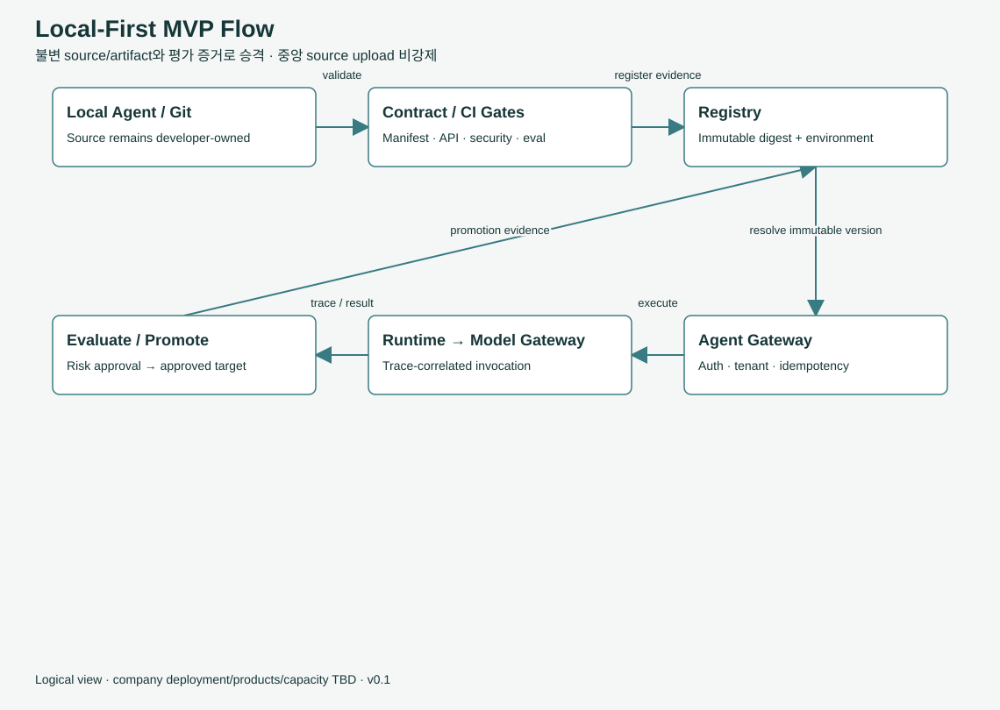

수명주기와 프로덕션 승인
개발자 가이드 문서입니다. 규범은 운영·평가, 배포 프로파일, Durable / HITL 기술 표준 문서가 기준입니다.
지금까지 민준이 지시문 두 문장을 고친 invoice-summary 1.3.0이 평가 데이터셋 3.0.0에서 37/40 = 0.925를 받아 승격 후보가 됐습니다. 운영 중인 것은 아직 1.2.0입니다.
장면
1.3.0은 등록됐고 평가도 통과했습니다. 그래도 서연의 요청은 여전히 1.2.0이 받습니다. 업무 요청을 받으려면 프로덕션 승인까지 받아야 합니다. 민준은 승인에 필요한 근거 여섯 가지를 한 장에 모으면서, 반복 채점에서 흔들린 두 행도 숨기지 않고 적습니다. 지훈은 그 한 장을 보고, 위험도가 medium이고 읽기 전용인 점을 들어 승인합니다. 그 순간부터 1.3.0이 업무 요청을 받습니다.
승인 단계가 없다면 등록만 하면 곧바로 업무 데이터를 만지게 되고, 무엇을 근거로 올렸는지 나중에 아무도 답하지 못합니다.
실물 보기
지훈이 본 1.3.0의 승인 기록입니다. 승인 요건 여섯 가지를 한 줄씩 적고 알려진 한계를 덧붙였습니다.
예시
| 승인 요건 | invoice-summary 1.3.0의 근거 |
|---|---|
| 불변 버전과 digest | 1.3.0, revision은 커밋 SHA, 산출물 sha256:… |
| 계약 적합성 | Manifest 스키마 검증 통과, 적합성 C1~C11 통과 |
| 보안 검토 | 지시문만 바뀜. 권한, 도구, 데이터 이동은 1.2.0과 같음 |
| 평가 결과 | 평가 데이터셋 3.0.0에서 두 지표 모두 37/40 = 0.925(번호 질문 28/28, 거래처명 질문 9/12). 따로 남겨 둔 평가 데이터셋 18/20 = 0.90 |
| 롤백 검증 | 1.2.0으로 되돌린 뒤 요청 A가 통과하는 것을 확인 |
| 사람 승인 | 지훈(재무팀장, 예시 역할). 위험도 medium |
| 알려진 한계 | 남은 오답 3행(row-29, row-30, row-40). 3회 채점에서 흔들리는 2행(row-09, row-21). 다음 개선 대상 |
- 평가 결과 칸에는 전체 점수 하나가 아니라 질문 유형별 점수와 따로 남겨 둔 평가 데이터셋의 점수를 함께 적습니다.
- "알려진 한계"는 요건이 아니지만 승인자가 무엇을 받아들이는지 알고 승인하게 합니다.
잘못되면
"지시문만 고쳤으니 평가는 건너뛰자"고 하면 월 누락을 고치려다 번호 질문 6행을 망가뜨린 수단 나 같은 수정이 그대로 올라갑니다(Agent Tuning). 지시문 한 줄도 Agent의 동작을 바꾸므로 새 버전이고, 새 버전은 같은 요건을 모두 거칩니다.
롤백을 검증하지 않고 올리면 문제가 생긴 날 되돌리는 방법을 그때 처음 시험하게 됩니다. 1.2.0으로 실제로 되돌려 보고 요청 A가 통과하는지 확인한 뒤에 올립니다.
개발 방식 (Local-First, CLI-First)
강제하지 않는 사항 (MUST NOT)
- 중앙 서버로의 소스 업로드
- 특정 Agent Studio 또는 IDE 사용
플랫폼 제공 사항
- 계약 기반 SDK, CLI, 템플릿
- 팀 Git 저장소와 기존 IDE·CLI 환경 유지
실험하는 동안에는 중앙에 등록하지 않아도 됩니다. 공동 시험이나 프로덕션 승격이 필요해질 때 등록합니다.
수명주기 단계
- local experiment로컬 개발 및 시험
- registered불변 버전과 Manifest 등록
- validatedJSON Schema·API 계약 검증 통과
- eligible평가·검토 완료, 승격 후보
- production-approved프로덕션 승인, 업무 트래픽 처리 가능
- deprecated신규 사용 중단 안내
- retired실행 종료
이 단계들과 별도로, Registry는 문제가 확인된 버전을 격리(quarantined) 상태로 두어 차단합니다.
프로덕션 승인 요건 (MUST)
승격할 산출물을 바뀌지 않는 참조로 고정합니다.
Manifest의 JSON Schema 검증과 API 계약 검증을 통과합니다.
Identity, 위임, 데이터 이동의 보안 검토를 마칩니다.
데이터셋·Agent·Manifest·정책 버전, 지표, 통과 기준, traceId가 결합된 평가 결과입니다.
문제가 생기면 이전 버전으로 되돌릴 수 있는지 실제로 확인합니다.
위험도가 높을수록 사람의 승인 단계가 늘어납니다.
핵심 포인트 셀프서비스가 기본입니다. 자동 검사를 통과하면 팀이 직접 다음 단계로 넘기고, 위험도가 높을 때만 사람의 승인이 더해집니다. 코드가 아니라 런타임 이미지, 의존성, 도구 descriptor, 모델 라우팅 정책이 바뀌어도 다시 평가합니다.
배포 프로파일
개발자 장비에서 계약을 검증하고 합성 데이터로 실험합니다.
프로덕션 승인 대상 아님등록된 사내·클라우드 자원에서 통합 시험과 평가를 합니다.
테넌트 격리 · 사용량 한도 · 감사승인된 hybrid 실행 환경에서 업무 트래픽을 처리합니다.
보안 · 평가 · 복구 · 위험도별 SLO 근거주의 실행 환경을 등록했다고 프로덕션 승인을 받은 것은 아닙니다. 이 설계는 개발자 PC나 Mac mini가 어느새 프로덕션 환경으로 쓰이는 일을 막으려고 둘을 구분합니다. SLO는 실행 환경과 업무 위험도에 따라 단계적으로 정의합니다.
멈췄다 이어 하는 실행(Durable, HITL)은 Agent Runtime과 Memory와 Agent Tools에서, 평가 결과로 Agent를 고치는 흐름은 Agent Tuning에서 다룹니다.
초기 구현 범위: E2E 실행 경로
플랫폼은 모든 모듈을 한꺼번에 구현하지 않습니다. 요청이 들어와 응답이 나갈 때까지의 E2E(end-to-end) 실행 경로를 먼저 완성하고, 그 위에 도구, RAG, Durable 실행, Multi-Agent, 분산 실행 환경을 차례로 더합니다.
- 로컬 AgentManifest 검증
- Agent Platform APIs인증 · Identity · 정책
- Runtime adapterAgent 실행
- Agent Gateway 모델 경로외부 · 자체 호스팅 모델
- 실행 추적 · 평가검증 근거 기록
- Registry · CI 게이트승인된 실행 환경으로 승격

CI 품질 게이트
계약은 문서로 당부하지 않고 코드로 검증해 강제합니다(Contract-as-Code). CI에서 검사가 하나라도 실패하면 산출물 업로드와 승격을 차단합니다(MUST). 이 패키지는 scripts/release.py로 포털 생성, 계약·런타임 테스트, TypeScript 검사, 클라이언트 smoke 테스트, 브라우저 오프라인 검사를 실행합니다. 회사 CI 제품은 TBD입니다.
한 문장으로
등록은 존재를 알리는 일이고, 업무 요청을 받으려면 근거 여섯 가지와 사람의 승인이 필요합니다.
이해 점검
Q1. registered 상태의 Agent가 업무 트래픽을 받을 수 있나요?
받을 수 없습니다. 승인 요건을 충족해 production-approved 상태가 되어야 합니다.
Q2. 코드는 그대로이고 모델 라우팅 정책만 바뀌어도 다시 평가해야 하나요?
해야 합니다. 런타임 이미지, 의존성, 도구 descriptor, 모델 라우팅 정책이 바뀌어도 다시 평가합니다.
Q3. 민준이 승인 기록에 "3회 채점에서 흔들리는 2행"을 적었습니다. 적지 않았다면 무엇이 달라지나요?
지훈은 0.925만 보고 승인하게 됩니다. 한계를 적어야 승인자가 무엇을 받아들이는지 알고 결정하고, 다음 개선 대상도 남습니다.
요약
- 개발과 실험은 팀이 알아서 하고, 프로덕션 승격은 검증 근거 6가지로 판단합니다.
- 배포 프로파일은 local, shared-experiment, production 세 가지이고, 등록과 승인은 서로 다른 단계입니다.
- E2E 실행 경로를 먼저 완성하고 기능은 차례로 더합니다.
근거와 참고 자료
- 평가 기반 개선과 운영 모니터링: 클라우드 Agent 플랫폼